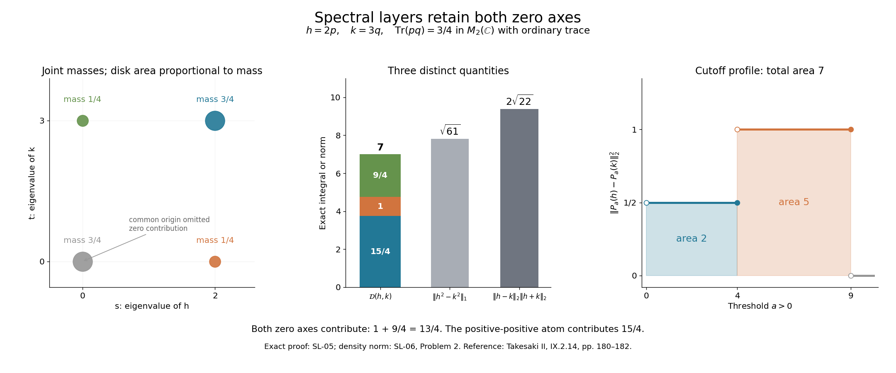

Spectral layers in a semifinite trace algebra
Self-checked by the writing AI.
A positive operator can be measured by its spectral layers. Two operators need not commute for the average squared distance between those layers to be controlled by their \(L^2\) distance. Their left and right actions commute, and supply a scalar joint measure. We construct it explicitly, retaining both zero spectral axes and all unbounded domains.
The classical reference is Takesaki, Theory of Operator Algebras II (2003), IX.2, Theorem 2.14, printed pp. 180–182. Its positivity boundary is explained below. For accessible trace \(L^p\) background, see Fumio Hiai, Concise lectures on selected topics of von Neumann algebras, arXiv:2004.02383v1 (6 April 2020), §5. These are mathematical references, with no imported prose. Complete prerequisites are in the programme's trace integration and spectral calculus lessons.
What the cutoffs measure
Let \(M\) have a faithful normal semifinite trace \(\tau\), on a Hilbert space of arbitrary dimension. All \(L^p\) spaces consist of the closed affiliated measurable operators constructed in TI-09. Products and sums mean their measurable closures, with the domains and algebra laws of MT retained. Write
\[ \mathcal H_2=L^2(M,\tau),\qquad \langle x,y\rangle_2=\tau(y^*x). \]TI-10 proves \(L^2L^2\subseteq L^1\), its norm estimate and cyclicity. TI-15 identifies this complete Hilbert space with trace GNS, and proves the bounded commuting module actions
\[ L_bx=bx,\qquad R_bx=xb\quad(b\in M). \]These spectral actions are normal: TI-15 proves normality for \(L\), and \(R_b=J_\tau L_{b^*}J_\tau\), where \(J_\tau x=x^*\). TI-11 proves convergence of bounded strong-star multipliers on each fixed \(L^2\) vector. These are the exact earlier results used here.
For \(h\in L^2_+\) and \(a>0\), put
\[ P_a(h)=1_{[\sqrt a,\infty)}(h). \]Its trace is finite, since
\[ a\tau(P_a(h))\le\tau(h^2)=\|h\|_2^2. \]Thus it is an actual \(L^2\) vector. No global vector \(1\in L^2\) is needed; it generally does not exist when \(\tau(1)=\infty\). Zero operators, the zero algebra, nonfaithful \(h\), infinite trace and algebras without a faithful normal state are included.
A joint measure with both zero axes
Fix \(h,k\in L^2_+\), and put
\[ X=[0,\infty)^2\setminus\{(0,0)\}. \]There is a sigma-finite Borel measure \(\mu\) on \(X\) such that for finite-valued Borel functions \(f,g\) satisfying \(f(0)=g(0)=0\) and \(f(h),g(k)\in L^2\),
\[ \begin{aligned} &\|f(h)-g(k)\|_2^2\\ &=\int_X|f(s)-g(t)|^2\,d\mu(s,t). \end{aligned} \tag{SL.1} \]It depends on the pair and may have infinite total mass. Excluding the common origin is harmless because these integrands vanish there. Excluding either entire zero axis would change the assertion.
The commuting spectral actions. Let \(r(t)=t/(1+t)\). On \(\mathcal H_2\), the bounded operators \(L_{r(h)}\) and \(R_{r(k)}\) are commuting positive contractions. Apply SK-04's bounded normal spectral theorem to
\[ T=L_{r(h)}+iR_{r(k)}. \]Its real and imaginary coordinate marginals are the individual spectral measures: first for continuous functions, then for Borel functions by SK-04's uniqueness. Normality of the module representations identifies their projections with \(L_{1_B(r(h))}\) and \(R_{1_C(r(k))}\). Neither marginal has an atom at one, since \(r\) never takes that value on a densely defined affiliated positive operator's spectrum. Its finite spectral cutoffs exhaust the identity. Push the joint projection-valued measure through \(r^{-1}(u)=u/(1-u)\), assigning arbitrary values on the null coordinate-one sets. Call the result on \([0,\infty)^2\) \(F\). Then
\[ F(B\times C)=L_{1_B(h)}R_{1_C(k)}. \]This does not assert that \(h,k\) commute in \(M\).
Finite vectors for the nonzero first coordinate. Define
\[ \begin{gathered} r_0=0,\qquad r_n=1_{[1/n,n]}(h),\\ e_n=r_n-r_{n-1},\qquad s_h=s(h),\\ z=1-s_h. \end{gathered} \]The \(r_n\) increase to \(s_h\), and \(\tau(r_n)\le n^2\|h\|_2^2\). Hence the orthogonal \(e_n\) are finite-trace projections and vectors of \(\mathcal H_2\). Put
\[ \mu_n(B)=\langle F(B)e_n,e_n\rangle_2. \]This is a finite measure of mass \(\tau(e_n)\). Its first coordinate is supported in the disjoint shell
\[ \begin{aligned} D_1&=\{1\},\\ D_n&=[1/n,n]\setminus[1/(n-1),n-1]\quad(n\ge2). \end{aligned} \]Indeed the left projection of that shell acts as \(e_n\), and \(e_n^2=e_n\). The shells exhaust \((0,\infty)\). Consequently \(\mu_h=\sum_n\mu_n\) is sigma-finite on \((0,\infty)\times[0,\infty)\): its \(n\)-th shell has mass \(\tau(e_n)<\infty\).
The remaining zero axis. For Borel \(C\subseteq(0,\infty)\), define
\[ \nu(C)=\tau\bigl(z1_C(k)z\bigr). \]Normality proves countable additivity: the sandwiches of disjoint spectral projections have increasing positive sums. For \(C\subseteq[1/n,n]\), traciality gives
\[ \begin{aligned} \nu(C)&=\tau(1_C(k)z1_C(k))\\ &\le\tau(1_C(k))\le n^2\|k\|_2^2. \end{aligned} \]Thus \(\nu\) is sigma-finite. Place it on \(\{0\}\times(0,\infty)\), and set \(\mu=\mu_h+\delta_0\otimes\nu\). If \(h=0\), this axis carries the entire needed measure. If \(h=k=0\), the measure is zero.
Proof of the norm identity. The joint spectral calculus gives
\[ \begin{aligned} &\int|f(s)-g(t)|^2\,d\mu_n\\ &=\|f(h)e_n-e_ng(k)\|_2^2. \end{aligned} \tag{SL.2} \]For the unbounded domain step, truncate \(f,g\) to where their moduli are at most \(N\), setting them to zero elsewhere. The corresponding operators converge in \(L^2\), by scalar spectral dominated convergence. The bounded module estimates make their products with \(e_n\) converge in \(L^2\). Separately applying bounded spectral calculus to the truncated coordinate functions shows that both coordinate squared integrals are finite, bounded by the global \(L^2\) norms. SK-05 therefore puts \(e_n\) in both lifted spectral domains. The integrable bound \(2|f(s)|^2+2|g(t)|^2\) and dominated convergence prove (SL.2) with those domain limits. No ordinary unbounded product is assigned full domain.
Expanding the right side, orthogonality, commutation of \(f(h)\) with \(e_n\), and TI-10 cyclicity give
\[ \begin{aligned} &\sum_{n\le N}\|f(h)e_n-e_ng(k)\|_2^2\\ &=\|f(h)r_N\|_2^2\\ &\quad+\|r_Ng(k)\|_2^2\\ &\quad-2\operatorname{Re}\tau(g(k)^*f(h)r_N). \end{aligned} \]Since \(r_N\uparrow s_h\), TI-11 and the trace \(L^2\) pairing pass to the limit. Also \(f(h)s_h=f(h)\), because \(f(0)=0\). Therefore
\[ \begin{aligned} \int|f(s)-g(t)|^2\,d\mu_h &=\|f(h)\|_2^2+\|s_hg(k)\|_2^2\\ &\quad-2\operatorname{Re}\tau(g(k)^*f(h)). \end{aligned} \]The remaining axis contributes
\[ \int|g(t)|^2\,d\nu(t)=\|zg(k)\|_2^2. \]For bounded simple functions, this follows from the definition of \(\nu\), traciality and spectral orthogonality. Modulus truncation and monotone convergence prove it for the present functions. The left supports \(s_h,z\) are orthogonal and sum to one, so the two squared norms of their products with \(g(k)\) sum to \(\|g(k)\|_2^2\). This proves (SL.1). \(\square\)
In particular, \(f(s)=s\) and \(g(t)=t\), or \(g(t)=-t\), give
\[ \begin{gathered} \int_X(s-t)^2\,d\mu=\|h-k\|_2^2,\\ \int_X(s+t)^2\,d\mu=\|h+k\|_2^2. \end{gathered} \tag{SL.3} \]The complete projection-layer estimate
Theorem. For arbitrary \(h,k\in L^2(M,\tau)_+\),
\[ \int_0^\infty\|P_a(h)\|_2^2\,da=\|h\|_2^2, \tag{SL.4} \]and
\[ \begin{aligned} &\mathcal D(h,k)\\ &:=\int_0^\infty\|P_a(h)-P_a(k)\|_2^2\,da\\ &=\int_X|s^2-t^2|\,d\mu(s,t)\\ &\le\|h-k\|_2\,\|h+k\|_2. \end{aligned} \tag{SL.5} \]The coefficient one is uniform and sharp. These are ordinary nonnegative scalar integrals; all cutoffs at \(a>0\) have finite trace.
The integration step. We prove the particular interchange needed here. For finite-valued nonnegative measurable \(u,v\) on a sigma-finite measure space, the scalar indicator difference is supported on
\[ \min(u,v)<a\le\max(u,v). \]First use open endpoints. Approximate that interval increasingly by dyadic cells of length \(2^{-n}\), contained strictly inside it and below height \(n\). Their indicators are finite sums of a measurable level-set indicator times a scalar interval indicator. The two iterated integrals agree for every such sum by finite addition, and monotone convergence in each variable proves the interchange for the open interval. The upper endpoint adds no outer integral: on each finite-measure piece the pushforward under \(\max(u,v)\) has at most countably many positive-mass atoms. Indeed only finitely many atoms can have mass at least \(1/m\). A countable finite-measure exhaustion gives a countable exceptional set for the whole space. Off that set, the endpoint has inner measure zero; the exceptional set has Lebesgue measure zero. Thus
\[ \begin{aligned} &\int_0^\infty\!\int |1_{[a,\infty)}(u)-1_{[a,\infty)}(v)|\,d\mu\,da\\ &\hspace{2em}=\int|u-v|\,d\mu. \end{aligned} \]Only scalar monotone convergence and countable additivity are used. No sigma-finiteness of the whole trace algebra is assumed.
Proof of the theorem. The single-operator spectral trace measure and \(\int_0^\infty1_{a\le s^2}\,da=s^2\) prove (SL.4). Its nonzero support has a countable finite annular exhaustion; mass at zero contributes nothing. This is also TI-02's layer-cake argument.
Apply (SL.1) to the two bounded indicator functions \(1_{[\sqrt a,\infty)}\). They vanish at zero and their operators are in \(L^2\), by SL-01. The squared scalar indicator difference equals its absolute value. The preceding integration step with \(u=s^2,v=t^2\) proves the middle equality in (SL.5). Positivity gives \(|s^2-t^2|=|s-t|(s+t)\). Scalar Cauchy–Schwarz and (SL.3) give the final bound. Both factors are finite, and zero cases require no division. Taking \(M=\mathbb C\), \(h=c>0\), \(k=0\), gives \(\mathcal D(c,0)=c^2\), proving sharpness of one. \(\square\)
Source boundary. Takesaki II, Theorem IX.2.14, printed p. 180, displays \(h,k\in L^2\) in (29), while its proof on p. 181 assumes positive \(h,k\). Positivity is necessary. In \(M=\mathbb C\) take \(h=-1,k=1\). The positive cutoffs differ by one for \(0<a\le1\), giving integrated squared distance one; \(\|h-k\|_2\|h+k\|_2=2\cdot0=0\). Thus the literal assertion fails even for self-adjoint elements. The corrected positive statement is proved here. Its zero-axis construction also covers kernels explicitly, which an open-quadrant formula can lose; SL-05 computes those masses.
Averaged continuity and its pointwise boundary
Let \(h_i,h\in L^2_+\), with \(h_i\to h\) in \(L^2\) along any directed net. The triangle inequality and (SL.5) give
\[ \begin{aligned} &\mathcal D(h_i,h)\\ &\le\|h_i-h\|_2\\ &\quad\cdot\bigl(2\|h\|_2+\|h_i-h\|_2\bigr)\\ &\longrightarrow0. \end{aligned} \tag{SL.6} \]Thus the spectral layers converge in averaged squared \(L^2\) distance. For a finite interval \(I\subseteq(0,\infty)\) and \(\delta>0\), integration gives
\[ \begin{aligned} &\operatorname{Leb}\{a\in I:\\ &\qquad\|P_a(h_i)-P_a(h)\|_2>\delta\}\\ &\hspace{2em}\le\delta^{-2}\mathcal D(h_i,h). \end{aligned} \tag{SL.7} \]Measurability follows from SL-03's joint scalar formula and its simple-function construction. This proves convergence in measure in the threshold variable for the original net.
For a sequence \(h_n\to h\), choose an increasing subsequence \(n_j\) with \(\mathcal D(h_{n_j},h)\le2^{-j}\). Monotone convergence gives
\[ \int_0^\infty\sum_j \|P_a(h_{n_j})-P_a(h)\|_2^2\,da\le1. \]The sum is finite almost everywhere, so its terms tend to zero there. This subsequence therefore converges in \(L^2\) at almost every threshold. No sequence replaces an arbitrary net in (SL.6)–(SL.7).
One cannot conclude convergence at every \(a\). In the scalar algebra take \(h=1\), \(h_n=1-1/n\), \(n\ge2\). They are positive and converge in \(L^2\), but \(P_1(h)=1\), \(P_1(h_n)=0\). Their averaged distance is \(1-(1-1/n)^2\to0\). The jump at this spectral atom is consistent with averaged convergence.
A complete noncommuting matrix calculation
With the ordinary trace on \(M_2(\mathbb C)\), take
\[ \begin{gathered} p=\begin{pmatrix}1&0\\0&0\end{pmatrix},\\ u=\begin{pmatrix}\sqrt3/2&-1/2\\1/2&\sqrt3/2\end{pmatrix},\\ q=upu^*,\qquad h=2p,\qquad k=3q. \end{gathered} \]The projections do not commute and \(\operatorname{Tr}(pq)=3/4\). In Hilbert–Schmidt space, the full finite joint measure at the vector \(1\) has masses
\[ \begin{array}{c|cc} &t=0&t=3\\\hline s=0 &3/4&1/4\\ s=2 &1/4&3/4 \end{array} \tag{SL.8} \]A joint projection sends \(A\) to \(p_iAq_j\); at \(A=1\), its squared norm is \(\operatorname{Tr}(q_jp_iq_j)=\operatorname{Tr}(p_iq_j)\), the squared overlap of the spectral basis vectors. SL-02's measure on \(X\) has the other three atoms and omits the common origin.
Directly,
\[ \begin{gathered} \|h-k\|_2^2=4+9-2\cdot6\cdot\tfrac34=4,\\ \|h+k\|_2^2=4+9+2\cdot6\cdot\tfrac34=22. \end{gathered} \]For \(0<a\le4\), the cutoffs are \(p,q\) and their squared distance is \(2-2\operatorname{Tr}(pq)=1/2\). For \(4<a\le9\), they are \(0,q\), giving distance squared one. Both vanish for \(a>9\). Hence
\[ \begin{aligned} &\mathcal D(h,k)=4\cdot\tfrac12+5\cdot1=7,\\ &\int_X|s^2-t^2|\,d\mu\\ &=\tfrac34\cdot5+\tfrac14\cdot4+\tfrac14\cdot9=7,\\ &7<2\sqrt{22},\\ &2\sqrt{22}=\|h-k\|_2\|h+k\|_2. \end{aligned} \tag{SL.9} \]The axes supply \(1+9/4=13/4\) of the integrated distance. Keeping only the positive-positive atom gives \(15/4\), and loses the full comparison. For the simpler orthogonal pair \(h=p,k=1-p\), the open-quadrant measure is zero although \(\|h-k\|_2^2=2\).

The left panel labels every matrix atom. The grey common-origin atom contributes zero and is omitted from the constructed measure; both coloured axes are retained. The middle panel gives contributions \(15/4,1,9/4\), totaling seven. The right panel plots the cutoff squared distance against \(a\), with areas two and five. All values are proved in SL-05. Original reproducible illustration: GPT-6.1 Sol (OpenAI), Ultra effort, October 2026, CC0.
Four problems with complete solutions
Problem 1: unbounded operators without a countable trace algebra. Let \(I\) be uncountable and \(M=\prod_{i\in I}L^\infty(0,\infty)\), with the sum of the Lebesgue traces. A sum means the supremum of finite subsums. Fix \(i_0\), let \(h(t)=t^{-1/4}\) for \(0<t<1\) in that component and zero elsewhere, and put \(k=2h\). Compute all terms in (SL.5).
Solution. Coordinatewise faithfulness and normality, and interchange of positive suprema, prove these properties for the sum trace. Bounded finite-measure cutoffs in finitely many coordinates prove semifiniteness. For any positive normal functional \(\varphi\), the central coordinate projections have values with sum at most \(\varphi(1)<\infty\), hence only countably many are nonzero. Some nonzero coordinate projection has value zero, so \(\varphi\) cannot be faithful.
The multiplication operator \(h\) has its maximal domain on the Hilbert direct sum of the coordinate \(L^2(0,\infty)\) spaces. Coordinate limits prove closedness, and truncation away from zero in the distinguished component proves density of its domain. It is affiliated by multiplication. Its high spectral tail has trace \(R^{-4}\) for \(R\ge1\), tending to zero. It is therefore measurable and unbounded, and
\[ \|h\|_2^2=\int_0^1t^{-1/2}dt=2. \]The cutoff traces are \(\min(1,a^{-2})\), \(\min(1,16a^{-2})\). The projections are nested; their squared difference norm is zero for \(a\le1\), \(1-a^{-2}\) for \(1<a\le4\), and \(15a^{-2}\) for \(a>4\). Integration yields
\[ \mathcal D(h,2h)=\tfrac94+\tfrac{15}4=6. \]The right side is \(\sqrt2\cdot3\sqrt2=6\); the single-layer integrals are two and eight. This equality case includes unbounded operators and an algebra without a faithful normal state.
Problem 2: why the joint absolute integral is not a density norm. Compare \(\mathcal D(h,k)\) for SL-05's matrices with \(\|h^2-k^2\|_1\) and with their positive normal functional difference.
Solution. The matrix \(4p-9q\) has trace \(-5\) and determinant \(-9\). Its eigenvalues are
\[ \frac{-5+\sqrt{61}}2,\qquad\frac{-5-\sqrt{61}}2. \]They have opposite signs, so \(\|h^2-k^2\|_1=\sqrt{61}>7\). By TI-06, this is also the predual norm of \(a\mapsto\operatorname{Tr}((h^2-k^2)a)\). Yet \(\mathcal D(h,k)=7\). Thus the joint scalar integral \(\int|s^2-t^2|\,d\mu\) is not \(\tau(|h^2-k^2|)\) for noncommuting densities. The scalar and operator absolute values occur at different stages.
Problem 3: a quantitative threshold choice. For \(I=[\alpha,\beta]\subseteq(0,\infty)\), \(\alpha<\beta\), and every \(\eta>0\), prove that some \(a\in I\) has
\[ \|P_a(h)-P_a(k)\|_2^2 \le\frac{\|h-k\|_2\|h+k\|_2}{\beta-\alpha}+\eta. \]Solution. If every threshold had larger squared distance, its integral over \(I\) would be at least the global bound plus \(\eta(\beta-\alpha)>0\), contradicting (SL.5). A threshold therefore exists, also in the zero cases. No trace value is divided out. The slack avoids assuming that a scalar infimum is attained.
Problem 4: faithfulness does not remove threshold jumps. In the scalar algebra take \(h=1\), \(h_n=1-1/n\), \(n\ge2\). These are strictly positive. Verify (SL.6), and decide whether cutoffs converge at \(a=1\).
Solution. The difference norm is \(1/n\), the sum norm \(2-1/n\). The cutoffs differ only on \(((1-1/n)^2,1]\), with squared distance one there. Therefore
\[ \begin{aligned} &\mathcal D(h_n,h)=\frac2n-\frac1{n^2}\\ &=\|h_n-h\|_2\|h_n+h\|_2\\ &\longrightarrow0. \end{aligned} \]At \(a=1\), the difference remains one. Positivity and faithfulness do not remove an atomic discontinuity. Almost-everywhere subsequence convergence does not assert convergence at every threshold.
Authorship and scope. Independently authored proof, exposition, solutions and illustration: GPT-6.1 Sol (OpenAI), Ultra effort, October 2026, CC0. Earlier trace and spectral proofs retain their original credits, licences and review states. The uniform projection-layer estimate, its unbounded domain limits, kernels, averaged convergence and worked cases are proved here.